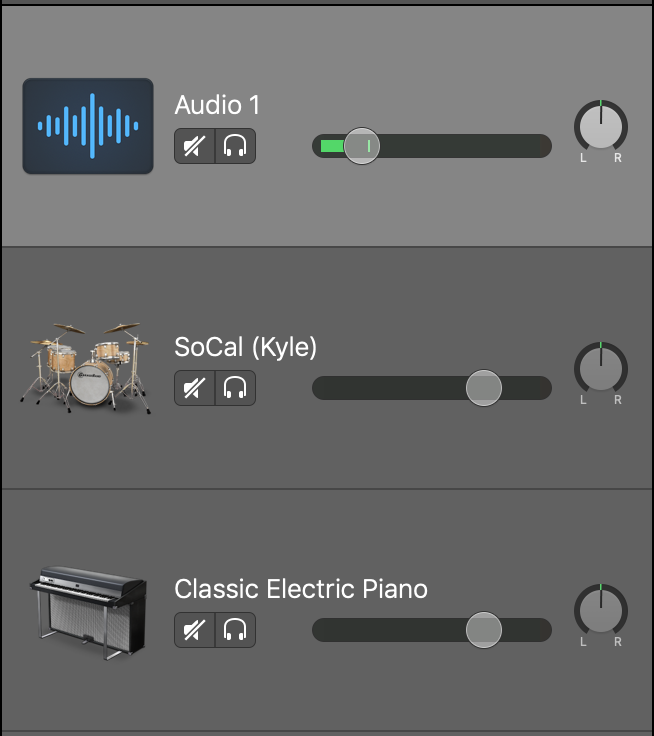

Garageband
Introduction to Audio Editing
Introduction
GarageBand is a multi-track recording and editing software application part of the iLife '11 suite used by boh professionals and amateurs alike. Here is a summary of what you can do with Garageband:
-
Garageband complete with synths, keyboard, orchestral and percussion instruments, and track presets for guitar and voice
-
Record your voice or music from real instruments and voice
-
Take Garageband built-in introductory guitar and piano lessons
-
Create iPhone ringtones and podcasts
GarageBand can export projects as .mp3 making it easy to share with friends, family and the internet community via social networking sites.
Prerequisites
-
An Apple computer equipped with Mac OS
-
iLife '11
-
You should have a basic familarity with the Mac OS operating system before taking this course.
-
For more advanced Music creation in GarageBand, some knowledge in music theory is preferred.
Creating a New Project
To open GarageBand, go ahead to your launchpad or application folder and click on the brown guitar Garageband icon.
A new window pops out with various options of project types. What project type you choose will start the project with the specific type of tracks. For example, if you choose Songwriter, the project start with some tracks that are helpful for songwriting, such as vocal, guitar and drum kit tracks; for Voice, the project starts with an audio track. It doesn't matter which project type you start with, you can create more tracks for other instruments and delete tracks within your project.
Choose Empty Project. On the left bottom corner, open the Details menu, and more options will collapse. You can change Tempo, Key Signature, Time Signature, Audio Input and Output under this menu.
-
Tempo: the speed at which a piece of music is or should be played. The defualt is 120 bpm (tempo di marcia), which is a common tempo in music. It is often called march tempo.
-
Time Signature: the signature defines how musical time is divided into measures and beats. The upper(left) number of the fraction controls the number of beats in each measure, and the lower(right) number controls the beat value(the length of the note that gets one beat). The default is 4/4, the most commonly used time signature.
-
Key Signature: the key defines the central note to which the other notes relate. The key pop-up menu lists keys for the natural notes (such as C, D, and E) and for chromatic keys (such as F-sharp and E-flat). Users can choose the scale (major or minor) for the project.
Click Choose. The GarageBand will prompt you to create your first track. For now, just leave it as defualt (Record using a microphone or line input), and press Create.
Interface
Let's take a quick look at GarageBand's interface
-
Content Library: GarageBand's built in library consists of many useful audio effects that can be applied to the audio
-
Track Panel: this panel allows you to manage and edit your tracks
-
Timeline: main workspace area of GarageBand. Here you are able to compose and edit audio laid out on a linear timeline
-
Transport Control: consists of playback buttons, LCD display and other shortcuts to specific features of GarageBand. More specific options will be covered later in this manual
Transport Control
LCD Display
The liquid crystal display (LCD Display), is located in the center of the transport control bar, above the timeline. It contains two different modes that let the user control different aspects of a project. To choose which mode the LCD displays, click the dropdown on the right side of the LCD and choose a mode from the pop-up menu.
Time(absolute time): shows the playhead position in hours, minutes, seconds, and fractions of a second
Project: displays the project key, tempo, time signature, beats, and beat divisions.
Users are able to change settings by double clicking on the LCD display
Library, Quick Help, Smart Control and Editors
On the left of Transport Control panel, there are four shortcuts for Library, Quick Help, Smart Control and Editors. Click on the button to activate or de-activate these features.
Playback Buttons
Playback Buttons from left to right:
Working with Tracks
GarageBand has a few types of tracks that allows you to create music from Mac, record voice, and add a drummer that automatically play with your song.
Track Header and Track Mixer
The Track Header displays an instrument icon and the name of the instrument followed by Mute and Solo buttons.

To the right of the Track Header is the Track Mixer. This area controls aspects of track sound.
-
Drag the pan dial to adjust the pan position of the track (the left-to-right placement in the stereo field).
-
Drag the volume slider to adjust the track's volume. You can watch the level meter to see the track's volume level as you record and play, enduring that your levels are in an acceptable range.
To Add a New Instrument Track
-
Press the Add New Track button on the top-left corner of track panel
-
Choose Software Instrument and press Create, you will notice the library changes according to the type of the track
library for instrument track
-
Browse the library, click on the instrument to change the instrument of the track.
Piano Track
Let's take a closer look at the piano track in GarageBand.
-
To create a piano track, add a software instrument track. Go to Library, choose Piano > Steinway Grand Piano
-
On the top menu bar, choose Window > Show Keyboard to display the piano keyboard
-
Click the black and white keys to play the virtual Grand Piano.
Notice the rate at which you play the keys depends on how fast they are clicked. GarageBand's Musical Typing view turns the computer keyboard to a piano keyboard.
-
To switch to Musical Typing mode, Click the icon with the letter 'A' located at the top-left of the keyboard window.
Each piano key is assigned to a key on your keyboard to make playing much easier. Settings for Octave, Velocity and Pitch Bend can also be adjusted in Musical Typing
Not only the Steinway Grand Piano track has the keyboard feature, many other instruments in GarageBand also support this feature. Browse the Library to explore the variety of instruments in GarageBand.
Working with Track Recording
Once you are comfortable using the keyboard, click the record button, the red circle located at the bottom of the window next to the playback buttons to start recording.
When finish recording, press the stop button
Cycle Region: Playback
The cycle Region button allows you repeatedly play back a region of your recording.
-
Click the Cycle button on the right side of the LCD display screen to turn the cycle region on or off. You will see a yellow bar appear in your timeline.
-
Click and drag the yellow bar to move the range or drag the edges to change the length of the range. This chosen region will be repeated until playback is stopped.
-
Press the play button to start or stop your cycle region playback.
Record Multiple Takes Using Cycle Region
You can record multiple takes over a cycled region, then decide which take is the best. This is useful if you want to pair a voice or an instrument to a specific area of your project. You are easily able to record as many takes as necessary, with each take appearing as its own track.
Apple Loops
Apple Loops Utility is a companion audio utility to GarageBand. It contains pre-recorded music files, organized into categories, that can be used to easily add beats, rhythm parts, and other repeating patterns to a project. Loops contain musical patterns that can be repeated seamlessly. It is possible to extend a loop to fill any amount of time in a project, and they can be combined with other loops or recordings in your project.
When you add an Apple Loop to a project, GarageBand creates a region for the loop in the timeline. GarageBand automatically matched the temopo and key of the region to the project's tempo and key. This lets users use several loops together, even if the loops were recorded at different keys and different speeds.
Add Loops
-
Make the loop brower visible by clicking the loop icon
The Loop Library will be activated on the right side of the interface
-
There are over 1,000 loops in the GarageBand Library. The loop brower allows users to find loops by genre, instrument and mood.
-
Select some criteria, such as "Elec Piano", "Clean" and "Electric", through these filters, there are only a few loops that match the criteria
Notice Loops have two different color icons to indicate their types. Software Instrument Loops, symbolized by a green note icon, can be added to both Real and Software Instrument tracks. Real Instrument Loops symbolized by a blue musical wave icon, can only be added to Real Instrument tracks.
-
Click to listen to the loop.
-
If you like one loop, mark it as one of your favorites by check under the heart column
Mark a loop as favorite allows you to have quick access to them by simply choosing "favorites" as your criteria
-
Once you find a loop that fits your project, select that loop. Click and drag it into the project as a new track.
-
To increase the length of your loop, hover the mouse over the top-right corner of the loop region until you see a rounded-arrow icon appear. Then click and drag to desired length.
-
If you would lke to find free audio to add to your projects, you can search for free audio at freesound.org